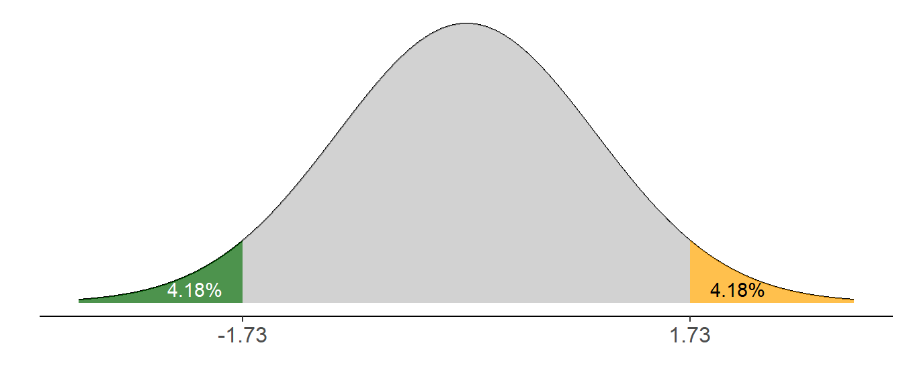
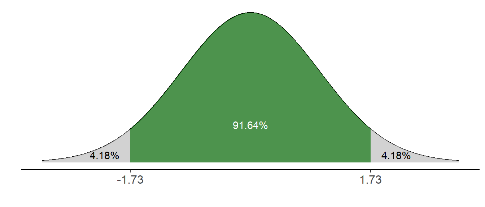
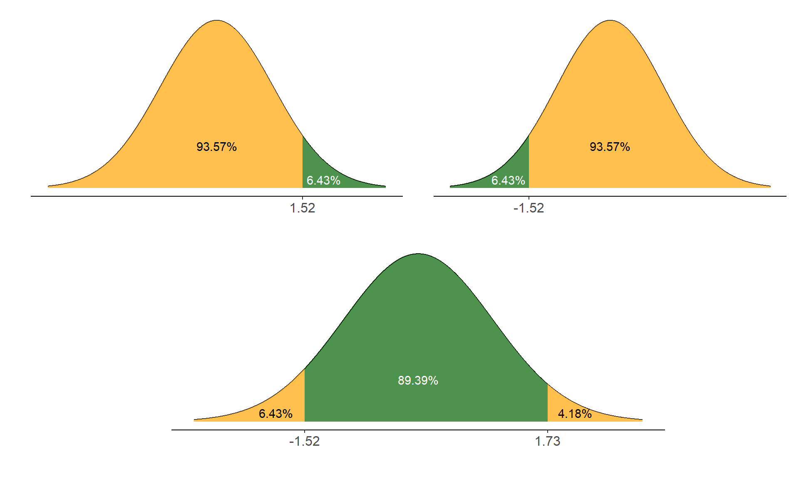
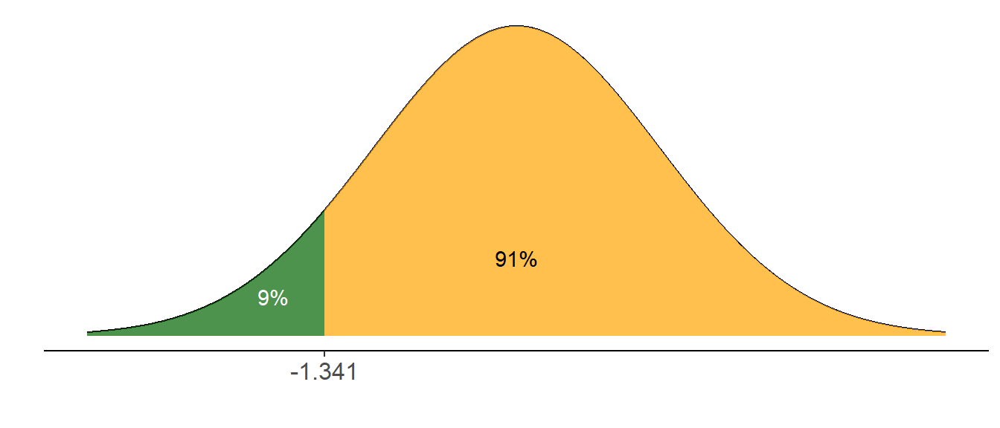
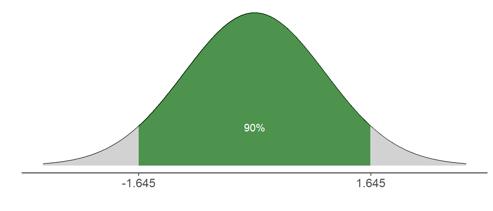

Normális eloszlás
A normális eloszlás sokszor elő fog jönni statisztika órákon, mivel számos változó, illetve statisztika ezt az eloszlást követi, illetve több teszt elvégzésének feltétele is, hogy a változók, amelyeken elvégezzük az adott tesztet, normális eloszlást kövessenek.
A normális eloszlást két paraméterrel tudunk megadni:
- a várható értékkel: \(\mu\)
- és a szórással: \(\sigma\)
A \(\mu\) várható értékű és \(\sigma\) szórású normális eloszlást \(N(\mu;\sigma)\)-ként jelöljük.
A normális eloszlás speciális esete az ún. standard normális eloszlás: \(N(0; 1)\)
A normális eloszlás sűrűségfüggvénye az ún. Gauss-görbe:
A fenti sűrűségfüggvény legfontosabb tulajdonságai:
- szimmetrikus a várható értékre
- a függvény alatti terület összesen 1 (100%) - ez minden sűrűségfüggvényre igaz - ezáltal
- annak valószínűsége, hogy a változó két érték közé esik egyenlő a függvény alatti területtel az adott intervallumon.
Akárcsak korábban a többi nevezetes eloszlásnál azt fogjuk vizsgálni, mennyi a valószínűsége, hogy a normális eloszlású változó értéke kisebb egy adott értéknél, nagyobb annál, illetve, hogy két megadott érték közé esik.
Az ott leírtak a normális eloszlásra is igazak, miszerint:
\[
\begin{aligned}
P(\xi < x)&=F(x) \\
P(\xi > x)&=1-F(x) \\
P(x_1 < \xi < x_2)&=F(x_2)-F(x_1)
\end{aligned}
\]
A fenti képletekben \(F(x)\) az eloszlásfüggvénynek az adott x értékhez tartozó függvényértéke. És ezért nagyon fontos a standard normális eloszlás, mert a számítás ezúttal nem képletekkel történik, hanem eloszlástáblázatot fogunk használni. Ilyeneket is sokféle változatban találni az interneten.
Ebben 0-tól 3,59-ig találhatók a standard normális eloszlású változó értékei, amelyeket gyakran \(z\)-vel jelölünk, és a hozzájuk tartozó eloszlásfüggvény-értékek (\(F(x)\))
A z értéket úgy tudják leolvasni, hogy a sorok elején lévő számok adják az egészeket és tizedeket, az oszlopok pedig a századokat. Pl. az 1,25-öt az 1,2-es sorban és az 5-ös oszlopban találják. A hozzátartozó táblázatos érték 0,8944, vagyis annak valószínűsége, hogy a változó 1,25-nél kisebb értéket vesz fel 89,44%.
A normális eloszlással kapcsolatban három dolgot kell mindenképpen megnéznünk:
- hogyan tudjuk kikeresni annak a valószínűségét, hogy a változó értéke megadott határok közé esik
- hogyan tudunk megadott valószínűségeket lehatárolni
- hogyan tudjuk a standard normális és más normális eloszlású változókat oda-vissza konvertálni
Valószínűségek kikeresése
Először azt nézzük meg, hogyan keressük ki a táblázatból annak valószínűségét, hogy a változó megadott értékek közé esik. Ez egyúttal a sűrűségfüggvény alatti területtel egyenlő az adott intervallumon, ezért így is fogom ábrázolni.
Többféle eset lehetséges:
- -∞ és egy pozitív értékek közötti terület - ez az alapeset
- pozitív érték és +∞ közötti terület
- negatív érték és +∞ közötti terület
- -∞ és egy negatív érték közötti terület
- terület a 0-ra szimmetrikus intervallumon és azon kívül
- terület aszimmetrikus intervallumon és azon kívül
Valószínűség -∞-től pozitív értékekig
\[P(\xi < x)=F(x)\]
Ha a keresett határérték 0 és 3,59 közötti, egyszerűen leolvassuk a táblázatos értéket a következő módon:
Pl. a 0 sor 0 oszlop a 0,00 értéknek felel meg, és a függvény alatti terület eddig a pontig 0,5 = 50%.
FELADAT:
Mennyi annak valószínűsége, hogy a standard normális eloszlású változó értéke kisebb, vagy egyenlő 1,73-mal?
MEGOLDÁS:
\[P(\xi \le 1,73) = F(1,73)\]
Ehhez a táblázatban megkeressük az 1,7-es sor 3-as oszlopában szereplő értéket, és ennyi lesz a valószínűség/terület.

Valószínűség pozitív értékektől +∞-ig
\[P(\xi>x)=1-F(x)\]
Ezek az esetek az előzőek komplementerei, ezért a keresett valószínűségeket megkapjuk, ha 1-ből kivonjuk a táblázatból kikeresett valószínűségeket.
FELADAT:
Mennyi annak valószínűsége, hogy a standard normális eloszlású változó értéke nagyobb, mint 1,73?
MEGOLDÁS:
\[P(\xi > 1,73) = 1-F(1,73)\]
Ehhez a táblázatban megkeressük az 1,7-es sor 3-as oszlopában szereplő értéket, és kivonjuk egyből ⇒ ennyi lesz a valószínűség/terület. Az ábrán látható, hogy a keresett terület (zöld) és az 1,73 alatti (narancssárga) együtt fedik le a függvény alatti teljes területet, ami 100%.
Valószínűség negatív értékektől +∞-ig
\[P(\xi > x) = F(-x)\]
Ezek tükörképei az első esetnek, ezért a keresett valószínűséget úgy kapjuk meg, ha a táblázatban az abszolút értékhez tartozó függvényértéket keressük ki (a képletben a \(-\) jel megváltoztatja az előjelet negatívról pozitívra).
FELADAT:
Mennyi annak valószínűsége, hogy a standard normális eloszlású változó értéke nagyobb, mint -1,73?
MEGOLDÁS:
\[P(\xi > -1,73) = F(-(-1,73))=F(1,73)\]
Ehhez a táblázatban megkeressük az 1,7-es sor 3-as oszlopában szereplő értéket, ennyi lesz a valószínűség/terület.
Valószínűség -∞-től negatív értékekig
\[P(\xi < x)=1-F(-x)\]
Ezek az esetek az előző komplementerei, egyben a második eset (pozitív értéktől ∞-ig) tükörképei.
FELADAT:
Mennyi annak valószínűsége, hogy a standard normális eloszlású változó értéke kisebb, vagy egyenlő -1,73-mal?
\[P(\xi \le -1,73) = 1-F(-(1,73))=1-F(1,73)\]
vagy
\[P(\xi \le -1,73) = P(\xi \ge 1,73) = 1-F(1,73)\]
Ehhez a táblázatban megkeressük az 1,7-es sor 3-as oszlopában szereplő értéket, és kivonjuk 1-ből ⇒ ennyi lesz a valószínűség/terület.

Szimmetrikusan lehatárolt területek
\[P(x_1 < \xi < x_2)=F(x_2)-F(x_1)\]
A leggyakoribb eset, hogy a keresett valószínűség a 0-ra szimmetrikus intervallumhoz tartozik. A kiszámításához az eddigi ismereteinket kell kombinálnunk.
FELADAT:
Mennyi annak valószínűsége, hogy a standard normális eloszlású változó értéke -1,73 és +1,73 közé esik?
MEGOLDÁS:
Mint az alábbi ábrából kiolvasható, kétféleképpen számíthatjuk ki ezt a területet:
- Egyrészt a -∞-től 1,73-ig lefedett területből (95,82%) vonjuk ki a -∞ és -1,73 közötti részt (4,18%), ami egyenlő az 1,73 és ∞ közötti területtel (mindkettőt korábban kiszámítottuk már)
- A másik lehetőség, hogy 1-ből vonjuk ki a két kimaradó valószínűséget (kétszer 4,18%-ot).
Ugyanazt az eredményt kapjuk.
Lépések: A táblázatban ismét az 1,73-hoz tartozó területet keressük ki, ezt 1-ből kivonva megkapjuk a fenti kimaradó területet, ami a szimmetria miatt egyenlő a negatív tartományban kimaradó területettel. Valamelyik fenti kivonással megkapjuk a végeredményt.

Aszimmetrikusan lehatárolt területek
\[P(x_1 < \xi < x_2)=F(x_2)-F(x_1)\]
Ilyen viszonylag ritkán fordul elő, de a fenti ismereteket alapul véve ezek a valószínűségek is kiszámíthatók, ha az egyes részterületeket ki sikerül számítani.
FELADAT:
Mennyi annak valószínűsége, hogy a standard normális eloszlású változó értéke -1,52 és +1,73 közé esik?
MEGOLDÁS:
A legegyszerűbb megoldás, ha a -∞ és 1,73 közötti részből (95,82%) vonjuk ki a -∞ és -1,52 közötti részt. Utóbbit úgy kapjuk meg, hogy 1-ből kivonjuk a -&infin és +1,52 közötti területet (ezt tudjuk közvetlenül kiolvasni a táblázatból). Hogy miért, azt az alábbi képek segíTik átlátni.

Az aszimmetrikus lehatárolás történhet két pozitív vagy két negatív érték között. Ezeknek a kilogikázását Önökre bízom, nem nehezebb, mint az egy negatív és egy pozitív érték közötti, és ugyanúgy megoldható a fenti lépések segítségével.
Összefoglaló
- Ha egy határérték (jelöljük a-val) van:
- -∞-től pozitív határértékig: kiolvassuk a táblázatból (ez F(a), pl. F(1,73) = 0,9582 = 95,82%)
- negatív értéktől +infin;-ig: kikeressük a táblázatból az abszolút értékének megfelelő valószínűséget. Ugyanez lesz a keresett valószínűség (pl. -1,73-tól +∞-ig: F(+1,73) = 0,9582)
- pozitív értéktől +infin;-ig: kiolvassuk a táblázatból a területet eddig az értékig: pl. F(1,73) = 0,9582. Ezt a valószínűséget 1-ből kivonva megkapjuk a keresett valószínűséget: 1 - 0,9582 = 0,0418
- -∞-től negatív határértékig: kikeressük az abszolút értéknek megfelelő valószínűséget. Ezt egyből kivonva megkapjuk a keresett valósznűséget: pl. -∞-től -1,73-ig: 1 - F(1,73) = 0,0418
- 3,59-nél nagyobb és -3,59 kisebb értékekkel azért nem foglalkozunk, mert 3,59-ig lefedjük a 99,98%-ot, vagyis alig fordul elő 3,59 fölötti érték (és emiatt -3,59 alatti is alig fordul elő)
Ugyanez vizuálisan
- Ha két határérték (legyen a és b) van:
- Ki kell számítani a területet a felsőig (azokat a szabályokat követve, mint az egy határértéknél leírtam)
- És ki kell számítani a területet az alsóig (ugyancsak a fenti szabályokat követve)
- Végül a keresett terület a kettő különbsége
Ugyanez vizuálisan
Határértékek megkeresése
A fentiek fordítottja, amikor meghatározott területet szeretnénk lehatárolni, és ehhez keressük az egy vagy két határértéket. Az alábbi esetek a legegyszerűbbtől haladnak a többlépéses problémákig.
50%-nál nagyobb terület lehatárolása -∞-től
Ez a legegyszerűbb eset. Egy lépésben megoldható: a táblázat belsejében megkeressük az adott valószínűséget (ha ez nem szerepel a táblázatban, akkor az első annál nagyobb valószínűséget), és összeolvassuk a soreleji és oszlop tetején lévő számokat.
FELADAT:
-∞ és mennyi között van a terület 75%-a?
MEGOLDÁS:
A táblázatban megkeressük a 0,75-öt: 0,7517 az első ennél nagyobb, ami a 0,6-os sorban és 8-as oszlopban van. A keresett határérték valahol a 0,67 és 0,68 között van. Általában a nagyobbat érdemes választanunk, amivel a keresett valószínűségnél valamivel többet fedünk le.
(Online kalkulátorral megtalálható a pontos határérték: 0,674)
### 50%-nál nagyobb terület lehatárolása +∞-ig
Úgy teszünk, mintha -∞-től akarnánk lehatárolni, de a kapott határértéket negatív előjellel vesszük (a szimmetria miatt)
FELADAT:
Mennyi és +∞ között van a terület 80%-a?
MEGOLDÁS:
A táblázatban megkeressük a 0,8-at: 0,84 és 0,85 között van valahol. A keresett határérték (inkább nagyobb területet határolunk le) -0,85.
(Online kalkulátorral megtalálható a pontos határérték: -0,842)
50%-nál kisebb terület lehatárolása +∞-ig
Ebben az esetben a komplementer valószínűséget határoljuk le a fenti szabályok alapján.
FELADAT:
Mennyi és +∞ között van a terület 15%-a?
MEGOLDÁS:
A táblázatban megkeressük az \(1-0,15= 0,85\)-öt: a keresett határérték 1,04.
(Online kalkulátorral: 1,036)
50%-nál kisebb terület lehatárolása -∞-től
Ezúttal is a komplementer valószínűséghez keressük a határértéket, és a végén még az előjelet is negatívra változtatjuk.
FELADAT:
-∞ és mennyi között van a terület 9%-a?
MEGOLDÁS:
A táblázatban megkeressük az \(1-0,09= 0,91\)-et: 1,34 és 1,35 között van, ezért a keresett határérték -1,35.
(Online kalkulátorral: -1,341)

Szimmetrikusan
Ez a leggyakoribb eset. A neheze, hogy a táblázatból nem közvetlenül a megadott valószínűséget kell kikeresni, hanem ehhez hozzá kell adni a kimaradó terület felét, hiszen a táblázatban -∞-től adott határértékig szerepelnek a valószínűségek.
Általánosan: \(1-\alpha\) terület lefedéséhez a táblázatban az \(1-\frac{\alpha}{2}\) valószínűséget kell megkeresni.
FELADAT:
Milyen értékek között van a terület 90%-a?
MEGOLDÁS:
Mint az alábbi ábrán is látszik, ha középen a terület 90%-át határoljuk le, akkor marad két egyenlő nagyságú terület, amelyek összesen 10%-ot tesznek ki, vagyis egyenként 5-5%-osak. Mivel a táblázatban -∞ és az adott határérték közötti területek vannak feltüntetve, az "alsó" szürke terület hozzáadódik a lefedni kívánt 90%-hoz, és a táblázatban ezért a 0,95-öt kell megkeresnünk. Ez pedig valahol 1,64 és 1,65 között van. Érdemes az 1,65-öt választani, hogy inkább nagyobb területet fedjünk le, mint kisebbet. A szimmetria miatt az alsó határérték -1,65.
(Online kalkulátorral \(\pm 1,645\))

Aszimmetrikusan
Ezt nem nézzük meg konkrétan. A fenti szabályok alapján, ha felírják a különböző részterületeket, meg tudják találni a határértékeket, de összességében nem túl valószínű, hogy ilyen problémával találkozzanak.
Konvertálás
Mivel normális eloszlásból végtelen sok létezik, ezért arra nincs lehetőség, hogy mindegyikhez táblázatot gyártsanak. De ez nem is szükséges, mert egyszerű a normális eloszlások és a standard normális eloszlás közötti konvertálás.
Bármely normális eloszlású változó bármely értéke (\(x\)) az alábbi képlettel átszámítható a standard normális eloszlás megfelelő értékére (általában \(z\)-vel jelölik). Ezt hívják standardizálásnak: \[z = \frac{x-\mu}{\sigma}\]
A konvertálás révén például kiszámítható, hogy egy tetszőleges \(N(\mu;\sigma)\) eloszlású változó esetében mennyi a valószínűsége, hogy értéke \(x_1\) és \(x_2\) közé esik:
- az \(x_1\) és \(x_2\) értéket standardizáljuk
- a standard normális eloszlás táblázata segítségével, a fenti szabályokat követve kiszámítjuk annak valószínűségét, hogy a standard normális eloszlású változó ezek közé esik.
- ennyi lesz az \(x_1\) és \(x_2\) közötti intervallumon is a sűrűségfüggvény alatti terület, vagyis annak valószínűsége, hogy a változó értéke ezek közé esik.
FELADAT:
A felnőttkori testmagasság a vizsgált populációban 170cm várható értékű és 10cm szórású normális eloszlást követ. Mennyi a valószínűsége, hogy valaki felnőttkori testmagassága 160 és 195 cm közé esik?
MEGOLDÁS:
- Először standardizáljuk a két értéket: \[z_1 = \frac{160 - 170}{10}=-1; \quad z_2 = \frac{195 - 170}{10}=2,5\]
- Ezt követően a fent tárgyalt módon kiszámítjuk, a standard normális eloszlású változó milyen valószínűséggel vesz fel -1 és 2,5 közötti értéket: \[P(-1 < \xi < 2,5)=F(2,5)-F(-1)=F(2,5)-(1-F(1))= \\
= 0,9938- (1-0,8413)=0,9938-0,1587=0,8351\]
- Ennyi (83,51%) annak a valószínűsége, hogy valaki magassága felnőtt korában 160 és 195 cm között van.
Visszafelé pedig bármilyen, a standard normális eloszláson lehatárolt területhez (pl. 90%, 95%, stb.) meg tudjuk találni a \(N(\mu;\sigma)\) eloszlás megfelelő határértékeit, és így ugyanekkora területet le tudunk fedni. Ezen alapul az intervallumbecslés.
A fenti képletből kifejezve \(x\)-et megkapjuk a visszaalakítás képletét: \[x = \mu + z*\sigma\]
FELADAT:
Korábban néztük, hogy a standard normális eloszlású változó értéke 95%-os valószínűséggel esik -1,96 és 1,96 közé. Milyen értékek közé esik a testmagasság 95%-os valószínűséggel, ha az \(N(170;10)\) eloszlású?
MEGOLDÁS:
- Azt már tudjuk, hogy a standard normális eloszlású változó értéke [-1,96;+1,96] intervallumba 95%-os valószínűséggel esik. Azt, hogy ezeknek mely magasságértékek felelnek meg, a 2. képlettel tudjuk kiszámítani: \[x_1 = 170 +(-1,96*10)=150,4; \quad x_2 = 170+1,96*10=189,6\]
Ugyanígy bármilyen területet kijelölhetünk a standard normális eloszláson, és a képlettel megkereshetjük, milyen határértékek felelnek meg e terület határainak. Ezt tesszük akkor is, ha konfidenciaintervallumot számolunk, de a várható érték helyére (amit nem ismerünk) a mintából becsült átlagot helyettesítjük.